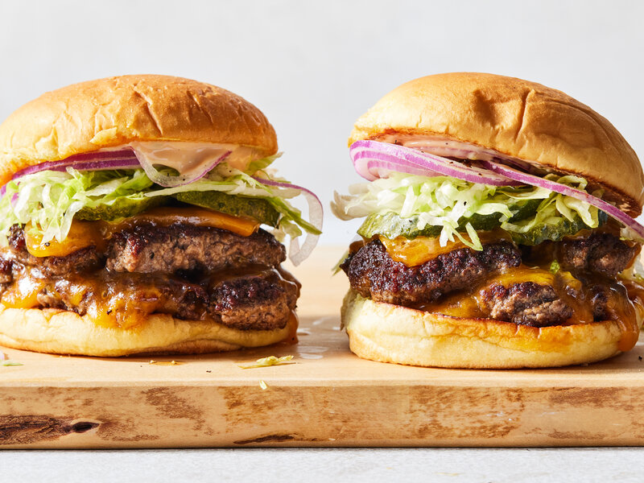

main meal
Smash Burgers
Smash Burgers with Pickles and Mayo
Juicy double-patty smash burgers with a spicy pickle and mayo flavour.
What You'll Need
Ingredients
Smash Burgers
- 800g of beef mince
- Salt
- 2 Tbsp oil
- Black pepper
- 8 slices of cheese
Burger Sauce
- ½ cup mayonnaise
- 10 Pickles, sliced
- 2 tsp mustard
- 1 Tbsp tomato sauce
- 1 Tbsp pickle brine
- ½ tsp garlic powder
- ½ tsp onion powder
- ½ tsp smoked paprika
- ½ tsp salt
Burger Assembly
- 4 brioche burger buns, halved and toasted
- Lettuce
- 2 tomatoes, sliced
- 1 red onion, sliced
- Pickles
Time To Cook
Method
Burger Sauce
Mix together all the sauce ingredients and place in the fridge for at least 30 minutes before using.
Toasting the Buns
Place a pan over medium-low heat.
Add the butter and, when melted, add as many bun halves as you can. Cook until toasted and lightly golden brown, about 1 to 2 minutes.
Remove from the pan and set aside.
Repeat with the remaining buns until they have all been toasted. Add more butter to the pan as needed.
Make the Patties
Divide the mince into 8 roughly equal portions.
Season each portion with salt and pepper.
Heat a pan on medium heat. Once the pan is heated up, lightly oil.
Place portions of meat in the pan (as many as you can fit). Use a spatula to flatten the patties.
Wait until you can see the meat browning well at the edges before flipping it over, usually after a minute or two.
Place a slice of cheese over each patty and cook for a further minute.
Assemble the Smash Burgers
Spread one half of the toasted bun with the burger sauce.
Place lettuce and sliced tomatoes on the bottom bun.
Top with two burger patties.
Finish with sliced red onion and extra pickles.
Recipe & Image Source
Credits
This Smash Burgers recipe was originally published by
Recipes.co.nz
and is courtesy of
Cook & Nelson.
Recipe by Kelly Gibney.
The image used on this page is sourced from New York Times Cooking.